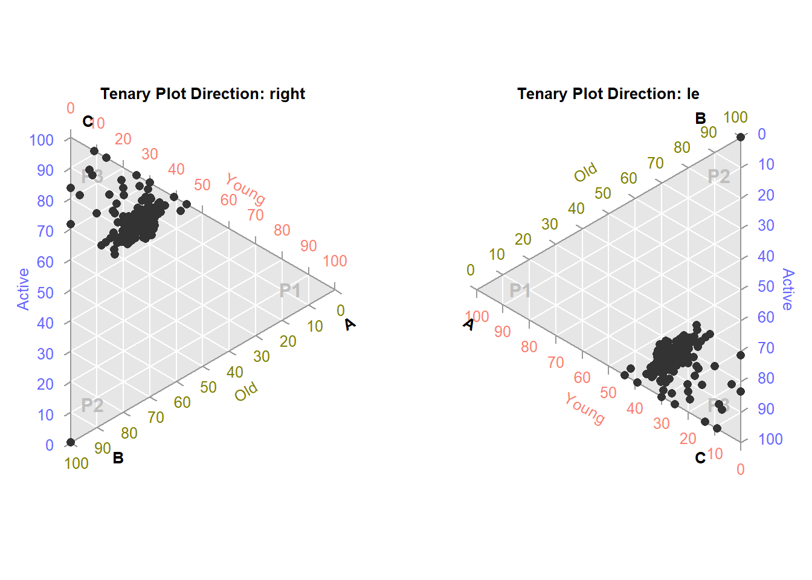

pacman::p_load(plotly, ggtern, tidyverse)Visual Creating Ternary Plot with R
Visual Correlation Analysis
Note: Last modified to include author’s details.
1. Getting Started
1.1 Install and launch R packages
For the purpose of this exercise, the following R packages will be used, they are:
ggtern, a ggplot extension specially designed to plot ternary diagrams. The package will be used to plot static ternary plots.
Plotly R, an R package for creating interactive web-based graphs via plotly’s JavaScript graphing library, plotly.js . The plotly R libary contains the ggplotly function, which will convert ggplot2 figures into a Plotly object.
1.2 Import the data
This exercise uses the dataset respopagsex2000to2018_tidy.csv from Singapore Residents by Planning AreaSubzone, Age Group, Sex and Type of Dwelling, June 2000-2018.
Show code
pop_data <- read_csv("data/respopagsex2000to2018_tidy.csv") 1.3 Overview of the data
Show code
summary(pop_data) PA SZ AG Year
Length:108126 Length:108126 Length:108126 Min. :2000
Class :character Class :character Class :character 1st Qu.:2004
Mode :character Mode :character Mode :character Median :2009
Mean :2009
3rd Qu.:2014
Max. :2018
Population
Min. : 0.0
1st Qu.: 0.0
Median : 140.0
Mean : 644.1
3rd Qu.: 800.0
Max. :14560.0 1.4 Preparing the data
Show code
# Deriving the young, economy active and old measures
agpop_mutated <- pop_data %>%
mutate(`Year` = as.character(Year))%>%
spread(AG, Population) %>%
mutate(YOUNG = rowSums(.[4:8]))%>%
mutate(ACTIVE = rowSums(.[9:16])) %>%
mutate(OLD = rowSums(.[17:21])) %>%
mutate(TOTAL = rowSums(.[22:24])) %>%
filter(Year == 2018)%>%
filter(TOTAL > 0)2. Plotting Static Ternary Diagram
Use ggtern() function of ggtern package to create a simple ternary plot.
Show code
# To build the static ternary plot
ggtern(data=agpop_mutated,aes(x=YOUNG,y=ACTIVE, z=OLD)) +
geom_point()
Use theme_rgbw() to add theme.
Show code
# Add theme
ggtern(data=agpop_mutated, aes(x=YOUNG,y=ACTIVE, z=OLD)) +
geom_point() +
labs(title="Population structure, 2015") +
theme_rgbw()
3. Plotting Interactive Ternary Diagram
Use plot_ly() function of Plotly R to create interactive ternary plot.
Show code
# reusable function for creating annotation object
label <- function(txt) {
list(
text = txt,
x = 0.1, y = 1,
ax = 0, ay = 0,
xref = "paper", yref = "paper",
align = "center",
font = list(family = "serif", size = 15, color = "white"),
bgcolor = "#b3b3b3", bordercolor = "black", borderwidth = 2
)
}
# reusable function for axis formatting
axis <- function(txt) {
list(
title = txt, tickformat = ".0%", tickfont = list(size = 10)
)
}
ternaryAxes <- list(
aaxis = axis("Young"),
baxis = axis("Active"),
caxis = axis("Old")
)
# Initiating a plotly visualisation
plot_ly(
agpop_mutated,
a = ~YOUNG,
b = ~ACTIVE,
c = ~OLD,
color = I("black"),
type = "scatterternary"
) %>%
layout(
annotations = label("Ternary Markers"),
ternary = ternaryAxes
)4. Self-exploratory using Tenary R Package
There is a R package Ternary that allows creation of ternary plots. This section is a self-exploratory exercise to experiment the Ternary package.
Show code
library(Ternary)Functions such as TernaryPlot(), TernaryText() and TenaryPoints() can be used to create the ternaryplot and build on aesthetic elements.
The two charts below are plotted side-by-side in opposite directions (i.e. right and left).
Show code
par(mfrow = c(1, 2), mar = rep(0.5, 4)) # create row/ column & set margin
for (dir in c("right", "le")) # other directions include: "up", down"
{
TernaryPlot(point = dir, atip = "A", btip = "B", ctip = "C",
alab = "Young", blab = "Old", clab = "Active",
lab.col = c("salmon", "#808000", "#6666ff"),
lab.cex = 0.8, grid.minor.lines = 0,
grid.lty = "solid", col = rgb(0.9, 0.9, 0.9), grid.col = "white",
axis.col = rgb(0.6, 0.6, 0.6), ticks.col = rgb(0.6, 0.6, 0.6),
axis.rotate = FALSE,
padding = 0.08)
# Add text
TernaryText(list(A = c(10, 1, 1), B = c(1, 10, 1), C = c(1, 1, 10)),
labels = c("P1", "P2", "P3"),
col = "grey", font = 2)
# Add data points
TernaryPoints(agpop_mutated[, c("YOUNG", "OLD", "ACTIVE")],
col = "grey20",
pch = 16)
# Add title
title(paste0("Tenary Plot Direction: ", dir), cex.main = 0.8)
}